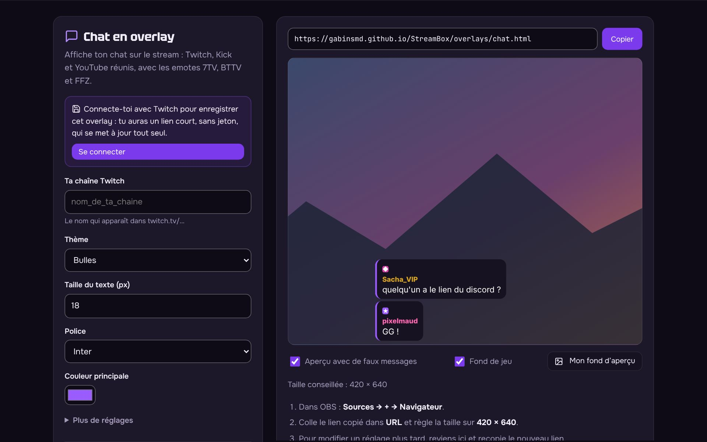
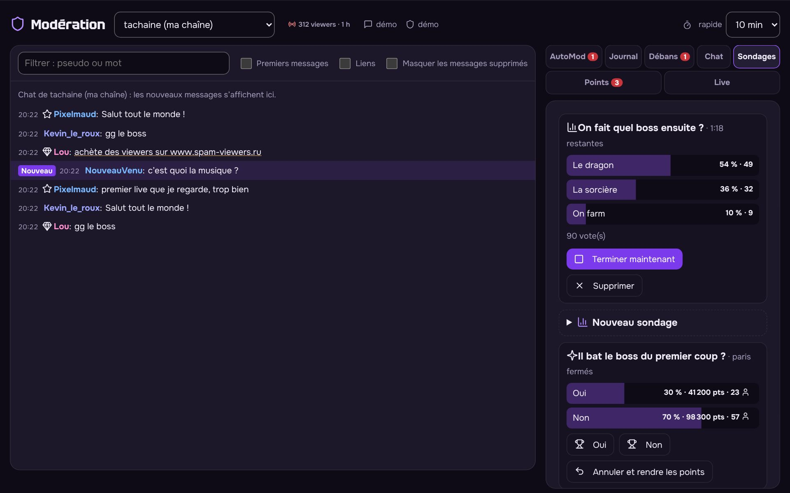

Ton live, sans rien installer.
Overlays OBS, bot de chat, panneau de modération : gratuits et open source.
- Gratuit, sans publicité ni pistage
- Libre, sous licence AGPL-3.0
- Un lien à coller dans OBS, rien d’autre

Les plus utilisés
Voir tous les outilsTrois étapes, aucune installation
- Choisis un outilRègle le style et les options. L’aperçu se met à jour en direct.
- Connecte-toi avec TwitchFacultatif, mais conseillé : tes overlays sont enregistrés, avec un lien court sans jeton qui se met à jour tout seul.
- Colle le lien dans OBSSources, puis Navigateur. Le bot, le subathon et les demandes de musique tournent ensuite tout seuls.

Tes modos ont leur panneau
Chacun se connecte avec son compte Twitch. Sanctions en un clic, file AutoMod, journal de l’équipe, sondages, prédictions et récompenses de points de chaîne, sur un seul écran qui tient aussi dans un dock OBS.
Par besoin
Open source et fait avec la communauté
Une idée, un bug, une envie ? Propose-la : elle profitera à tout le monde.